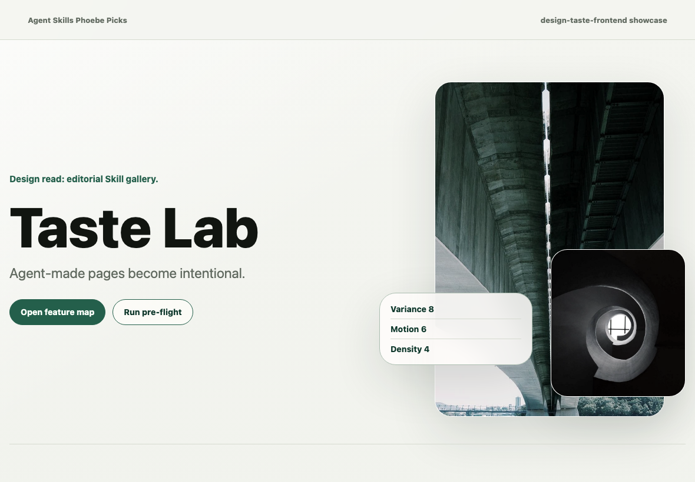
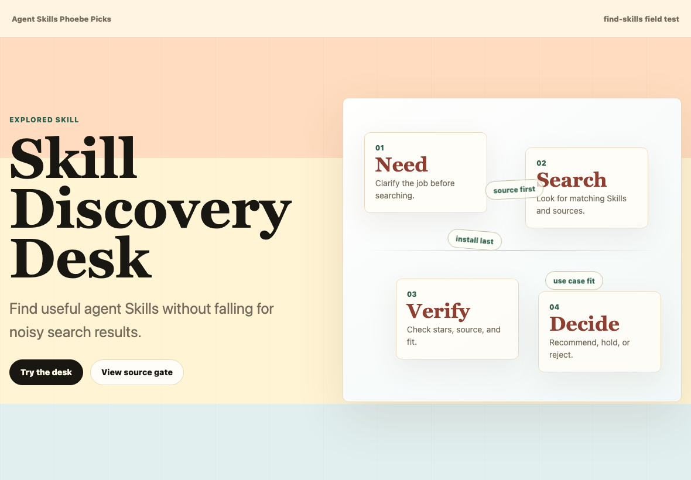

Design Taste Frontend Lab
PublishedSee how one anti-slop Skill changes typography, layout, motion, and pre-flight judgment.
- Skill
- design-taste-frontend
- Source
- 64,018-star repository
- Result
- 8.5/10 field rating

Also in the fieldSkill Discovery Desk tests how to find and vet Skills before installation.